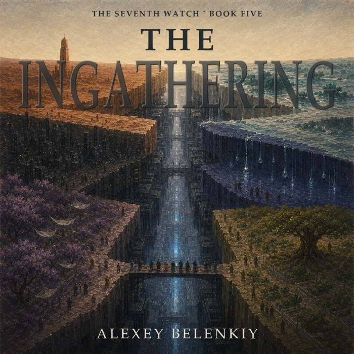

VAll realms
The Ingathering
The stagger fails. Two ages meet for the first time in twenty-eight thousand years.
Fifth position on the WheelAll realms
Every watch is awake at once, for the first time in the voyage. A siege is a closed valve. A famine is a signature.
The world was re-plumbed by design so that no realm’s life-support is complete alone: Karsk drinks only if the Sound’s locks open, the Sound forges nothing without Kiln metal, everyone eats from Solace. Now every realm is awake together, and the age’s three great answers go to war — the Restoration, who would repair the old order by force and whose theology is sincere; the Breakers, who refuse arrival itself; and the Compact, gathering keys across five books of consequence.
Read it, or listen
Four editions are in the making at Orb & Ink. None is on sale yet.
Read
- E-bookComing
- PaperbackComing
- HardcoverComing
Listen
- Audiobookunabridged narrationComing
